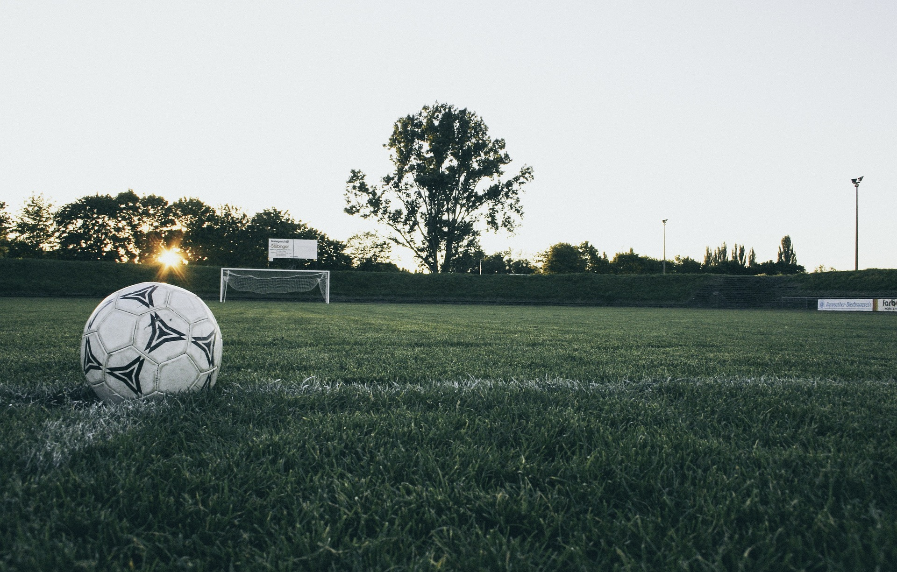

|
We've got a top-tier playing surface where players of all levels can jump in and have a great time.
Our venue comes with all the modern amenities you need to enjoy the game to the fullest.
Located right in Bharatpur-10, Chitwan, it's super easy to get to, no matter where you're from.
Whether you're a local or visiting, you can quickly find your way to Futsal Arena. We're conveniently located, with easy access to transportation. It's the ideal spot for your futsal needs.
With flexible booking options and rates starting at just 1400 per game, it's affordable and convenient for everyone. Whether you're looking for a casual game, some practice time with your team, or a competitive tournament, Futsal Arena has got you covered.
At Futsal Arena, we believe that futsal is not just a game; it’s an experience. Our courts are designed for optimal play, and our facilities are tailored to make every match exciting and smooth. From the turf to the locker rooms, we ensure comfort and functionality at every turn.
What are you waiting for? Come on over and experience futsal like never before—we can’t wait to have you! Whether you're here to play, practice, or compete, Futsal Arena is ready to give you an unforgettable experience.
|

|